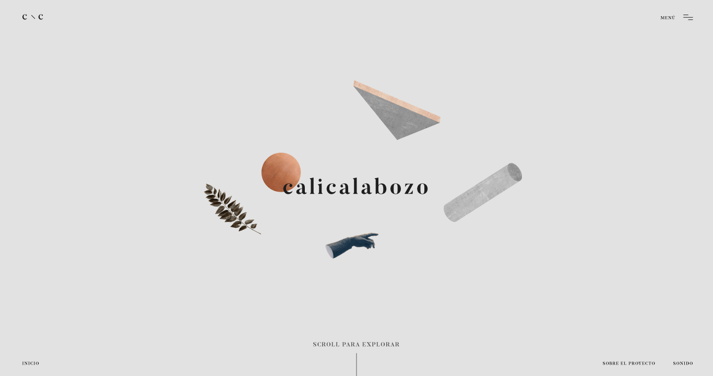

work
info
calicalabozo - calicalabozo - calicalabozo
Calicalabozo is an interactive website made to represent the cultural identity from Cali, Colombia that are inside the works of the writer Andrés Caicedo.
ROLE
Art Direction, Development, Motion Graphics, Ui, Ux.
